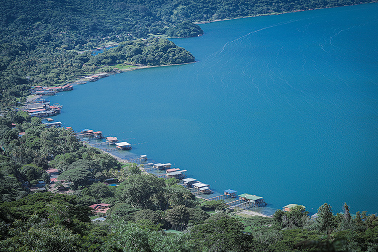

Lago de Coatepeque - Santa Ana
Its blue waters and high ecotourism offer make Lake Coatepeque one of the favorite destinations for Salvadorans and foreigners, here you can practice kayaking, jet skiing, and diving.
This volcanic lake has abundant natural wealth. Visitors can observe a great variety of resident and migratory birds or go fishing, diving or riding a kayak, jet skiing, or boat riding. In addition, the surroundings entice you to go hiking or mountain biking, relish the beautiful panoramic views covered with lush vegetation.
Its waters change from blue to turquoise green. According to authorities of the Ministry of Environment and Natural Resources of El Salvador, this is a cyclical phenomenon that occurs from time to time. The color change has happened in 1998, 2006, 2012, 2016, 2017, 2018, and 2019.
|

|